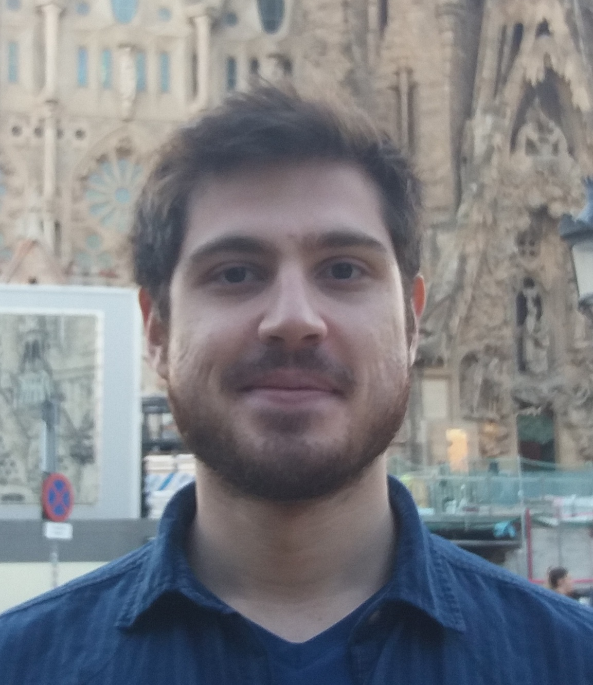

Ahmet Alacaoglu
I am a postdoctoral research associate working with Stephen J. Wright at the University of Wisconsin-Madison.
I completed my PhD in Computer and Communication Sciences at École Polytechnique Fédérale de Lausanne (EPFL) in 2021.
Prior to that, I obtained my BSc in Electrical and Electronics Engineering from Bilkent University in 2016.
My research interests are in optimization, machine learning and reinforcement learning.
I especially like understanding the theoretical properties of practical optimization algorithms and improving them.
Links: Google Scholar CV
Contact: alacaoglu at wisc dot edu
Papers:
- A. Alacaoglu and H. Lyu, "Convergence and Complexity of Stochastic Gradient Methods with Dependent Data for Nonconvex Optimization", arXiv:2203.15797, 2022
- A. Alacaoglu, V. Cevher and S. J. Wright, "On the Complexity of a Practical Primal-Dual Coordinate Method", arXiv:2201.07684, 2022
- A. Alacaoglu and Y. Malitsky, "Stochastic Variance Reduction for Variational Inequality Methods", Conference on Learning Theory (COLT), 2022
- A. Alacaoglu, L. Viano, N. He and V. Cevher, "A Natural Actor-Critic Framework for Zero-Sum Markov Games", International Conference on Machine Learning (ICML), 2022
- A. Alacaoglu, O. Fercoq and V. Cevher. "On the Convergence of Stochastic Primal-Dual Hybrid Gradient", SIAM Journal on Optimization (SIOPT), 2022
- A. Alacaoglu, Y. Malitsky and V. Cevher. "Convergence of Adaptive Algorithms for Constrained Weakly Convex Optimization", Advances in Neural Information Processing Systems (NeurIPS), 2021
- A. Alacaoglu, Y. Malitsky and V. Cevher. "Forward-Reflected-Backward Method with Variance Reduction", Computational Optimization and Applications (COAP), 2021
- A. Alacaoglu, O. Fercoq and V. Cevher. "Random Extrapolation for Primal-Dual Coordinate Descent", International Conference on Machine Learning (ICML), 2020
- A. Alacaoglu, Y. Malitsky, Panayotis Mertikopoulos and V. Cevher. "A New Regret Analysis for Adam-type Algorithms", International Conference on Machine Learning (ICML), 2020
- M.-L. Vladarean, A. Alacaoglu, Y.-P. Hsieh and V. Cevher. "Conditional gradient methods for stochastically constrained convex minimization", International Conference on Machine Learning (ICML), 2020
- M. F. Sahin, Armin Eftekhari, A. Alacaoglu, F. Latorre and V. Cevher. "An Inexact Augmented Lagrangian Framework for Nonconvex Optimization with Nonlinear Constraints", Advances in Neural Information Processing Systems (NeurIPS), 2019
- O. Fercoq, A. Alacaoglu, I. Necoara and V. Cevher. "Almost Surely Constrained Convex Optimization", International Conference on Machine Learning (ICML), 2019
- Q. Tran-Dinh, A. Alacaoglu, O. Fercoq and V. Cevher. "An Adaptive Primal-Dual Framework for Nonsmooth Convex Minimization", Mathematical Programming Computation, 2019
- A. A. Ozaslan, A. Alacaoglu, O. B. Demirel, T. Cukur and E. U. Saritas. "Fully Automated Gridding Reconstruction for Non-Cartesian X-Space Magnetic Particle Imaging", Physics in Medicine & Biology, 2019
- A. Alacaoglu, Q. Tran-Dinh, O. Fercoq and V. Cevher. "Smooth Primal-Dual Coordinate Descent Algorithms for Nonsmooth Convex Optimization", Advances in Neural Information Processing Systems (NeurIPS), 2017
Service:
- Conference reviewer: ICML 2020-2022, NeurIPS 2019-2022, ICLR 2020-2022, COLT 2022
- Expert reviewer: ICML 2021
- Journal reviewer: SIAM Journal on Optimization (SIOPT), Journal of Machine Learning Research (JMLR), Journal on Optimization Theory Applications (JOTA), Computational Optimization and Applications (COAP), Optimization Methods and Software, Transactions of Machine Learning Research (TMLR), IEEE Transactions on Automatic Control (TAC), EURO Journal on Computational Optimization
- Seminar organizer: IFDS Ideas Forum, UW-Madison, Fall 2021
- Session organizer: INFORMS Optimization Society Meeting, SC, USA, 2022
- Session organizer: International Conference on Continuous Optimization, PA, USA, 2022
- Session organizer: SIAM Conference on Mathematics of Data Science, CA, USA, 2022